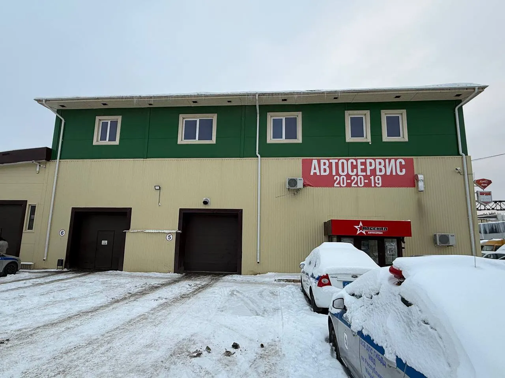
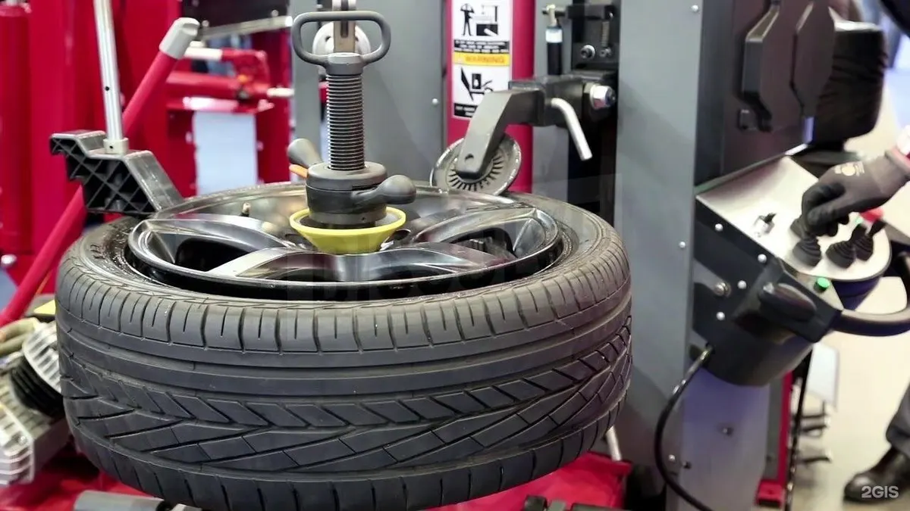
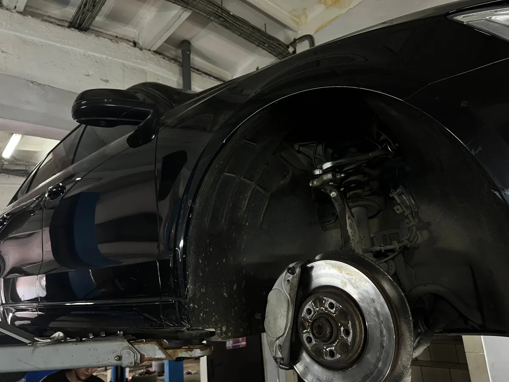
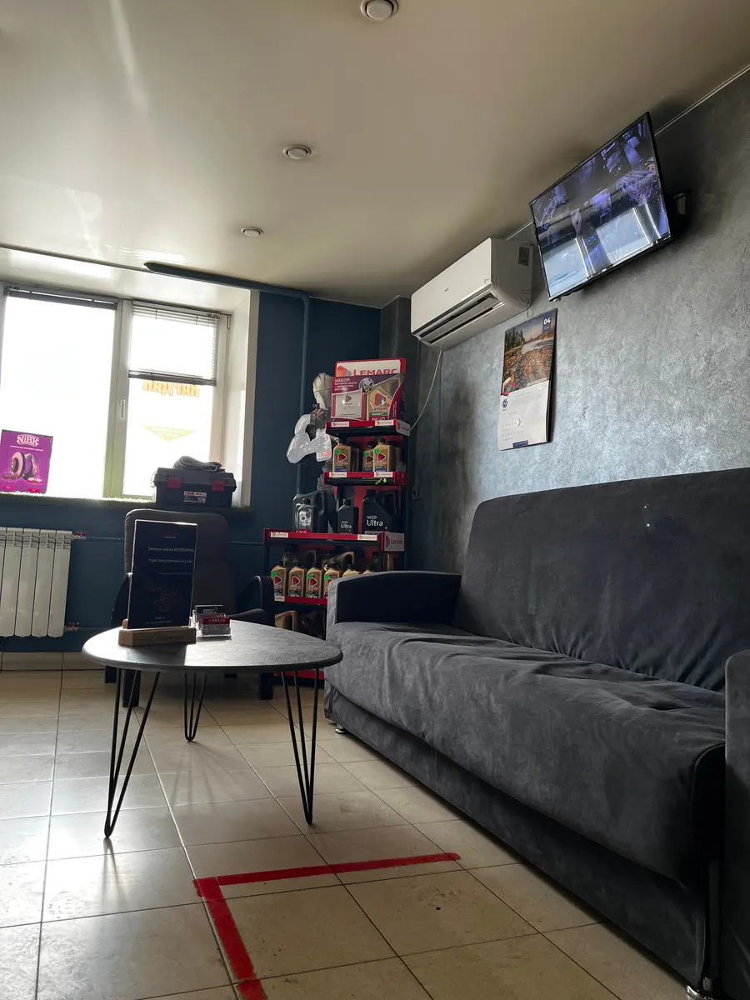

Автосервис в Йошкар-Оле · ул. Соловьёва, 22А/1
Автосервис в Йошкар-Оле: ремонт ходовой, ТО, развал-схождение
Автосервис «Арсенал» на улице Соловьёва: ремонт ходовой и рулевого, замена ГРМ и масла, развал-схождение, шиномонтаж. Цены на работы - без сюрпризов, запись на время.
- 5,0 на Яндекс Картах, 135 отзывов
- Развал-схождение на легковые, кроссоверы, внедорожники и коммерческий транспорт
- Обслуживаем автобусы и микроавтобусы

Услуги: автосервис «Арсенал» в Йошкар-Оле
Входит
- Ремонт ходовой части и рулевого управления: шаровые, стойки, сайлентблоки, ШРУС, рулевые тяги
- Развал-схождение на легковые автомобили, кроссоверы, внедорожники, УАЗ, Газель и микроавтобусы
- Замена ГРМ и цепи, сцепления, масла в двигателе и АКПП
- Ремонт тормозной системы и суппортов
- Ремонт генераторов, замена радиаторов, заправка кондиционера
- Шиномонтаж и балансировка колёс
Отдельно, если нужно
- Запись на время через сайт: заявка уйдёт в WhatsApp, время подтвердят в ответ
- Адрес: Йошкар-Ола, ул. Соловьёва, 22А/1, есть парковка
- Оплата картой, в сервисе есть туалет
Цены на ремонт и обслуживание авто в Йошкар-Оле
Цены на работы - ориентиры, итоговую сумму мастер называет после осмотра автомобиля и согласует до начала ремонта.
Ходовая часть и рулевое
- Замена шаровой опорыот 400 ₽
- Замена стоек стабилизатора800 ₽
- Замена сайлентблока (на снятом рычаге)500 ₽
- Замена ШРУСот 1500 ₽
- Замена амортизаторной стойки (передней)1600 ₽
- Замена рулевого наконечника450 ₽
- Осмотр ходовой550 ₽
Развал-схождение
- Передняя ось, легковой транспорт1300 ₽
- Передняя ось, кроссоверы1800 ₽
- Передняя и задняя ось, внедорожники2500 ₽
- Газель Next2400 ₽
ТО и двигатель
- Замена масла в двигателе450 ₽
- Замена салонного фильтра450 ₽
- Замена охлаждающей жидкости600 ₽
- Замена масла в АКПП1800 ₽
- Замена ГРМ (отечественные, 8 клапанов)4000 ₽
- Замена ГРМ (иномарки)от 6500 ₽
- Замена сцепления4500 ₽
Тормоза, кондиционер, шины
- Замена передних тормозных колодок600 ₽
- Замена передних тормозных дисков1700 ₽
- Заправка кондиционераот 1300 ₽
- Ремонт генератора3000 ₽
- Шиномонтаж комплекс R15-162800 ₽
- Слесарные работы, 1 нормо-час1200 ₽
Цены указаны в рублях за работу, «от» - минимальная стоимость. Стоимость запчастей и расходников называют отдельно. Оплата картой.
Как записаться в автосервис в Йошкар-Оле
- 01
Выбрали услугу и время
Укажите услугу, день и час в форме на сайте - заявка уйдёт в мессенджер. Марку, год и что беспокоит напишите в сообщении.
- 02
Подтвердили время
Время подтверждаем в мессенджере или по звонку: +7 (902) 430-20-19.
- 03
Диагностика и согласование
Мастер осматривает автомобиль, называет работы и стоимость. Дальше - по вашему решению.
- 04
Выдача автомобиля
Осмотрите результат вместе с мастером до оплаты.



Что пишут клиенты автосервиса «Арсенал»
Честно называют проблемы
«Чесно скажут какие проблемы по машине. Могут наглядно это показать» - Pendelskiy Igor, 13 марта.
Без лишних услуг
«Работу выполнили быстро и качественно, всё подробно объяснили, без навязывания лишних услуг» - Егор Толмачев, 6 февраля.
Свой склад запчастей
«Огромный склад своих запчастей, никогда еще не ждал» - Александр Б., 15 марта.
Отзывы с Яндекс.Карт
«Автосервис 5+. Ремонт и обслуживание на высоком уровне. Чесно скажут какие проблемы по машине. Могут наглядно это показать. Если что-то в дальнейшем вскрывается, позвонят обрисуют подробно проблему, стоимость, а решение принимаешь сам.»
Pendelskiy Igor · 13 марта
«Остался очень доволен автосервисом. Работу выполнили быстро и качественно, всё подробно объяснили, без навязывания лишних услуг. Приятное отношение к клиенту и адекватные цены.»
Егор Толмачев · 6 февраля
«С момента покупки двух микроавтобусов обслуживаю их в этом сервисе, всегда все супер, быстро и качественно. Огромный склад своих запчастей, никогда еще не ждал. Молодцы! Всем рекомендую.»
Александр Б. · 15 марта
Отзывы с карточки на Яндекс.Картах, без правок.
Частые вопросы
Сколько стоит ремонт ходовой в Йошкар-Оле?
Ориентиры по работам в автосервисе «Арсенал»: замена шаровой опоры - от 400 ₽, стоек стабилизатора - 800 ₽, ШРУС - от 1500 ₽, передней амортизаторной стойки - 1600 ₽. Точную сумму мастер называет после осмотра.
Сколько стоит развал-схождение в Йошкар-Оле?
Передняя ось легкового автомобиля - 1300 ₽, кроссовера - 1800 ₽, передняя и задняя ось внедорожника - 2500 ₽. Для Газели Next - 2400 ₽, для УАЗ «Профи» - 2200 ₽.
Сколько стоит замена ГРМ?
Для отечественных автомобилей с 8 клапанами - 4000 ₽, с 16 клапанами - от 5500 ₽, для иномарок - от 6500 ₽. Стоимость зависит от двигателя, мастер уточнит её при записи.
Обслуживаете микроавтобусы и коммерческий транспорт?
Да: в сервисе принимают автобусы и микроавтобусы, делают развал-схождение на Mercedes Sprinter, VW Crafter, Газель Business и Next, Sollers Atlant.
Есть ли шиномонтаж и заправка кондиционера?
Да. Шиномонтаж комплекс R15-16 - 2800 ₽, R17-19 - 3600 ₽, балансировка колёс R20-21 - 350 ₽. Заправка кондиционера - от 1300 ₽.
Нужно ли записываться заранее?
Лучше записаться: выберите услугу, день и время в форме на сайте - заявка откроется в WhatsApp. Можно позвонить: +7 (902) 430-20-19.
Где находится автосервис и как оплатить?
Йошкар-Ола, улица Соловьёва, 22А/1, рядом есть парковка. Оплата картой.
Запишитесь на ремонт ходовой, развал-схождение или ТО в Йошкар-Оле
- Адрес
- ул. Соловьёва, 22А/1, Йошкар-Ола
- Часы
- время приёма уточняйте по телефону
- Телефон
- +7 (902) 430-20-19